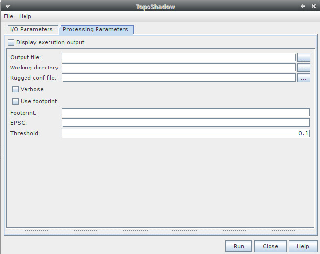

| Topographic Shadows Operator | |
It is proposed a simple approach for detection and masking of topographic shadows. The principle of shadow identification is to map a ground area and estimate for each sample ground point whether it is directly under Sun light or if it is behind another topographic feature as seen from the Sun.

Get the binaries here:
https://trac.osgeo.org/gdal/wiki/DownloadingGdalBinaries
Binaries may not be available, you will have to compile the sources. You can follow the building process header
Create the GDAL_DIR environnement variable (the location where the package will be installed)
cd $GDAL_DIR
wget http://download.osgeo.org/gdal/2.4.0/gdal-2.4.0.tar.gz
tar -xvzf gdal-2.4.0.tar.gz
cd gdal-2.4.0
./configure --with-java=yes
./make
Then edit gdal-2.4.0/swig/java/java.opt with your JAVA_HOME path
cd gdal-2.4.0/swig/java/
./make
Fdollowing environement variable will be necessary for launching topograpgy shadow extraction
GDAL_LIBRARY_PATH = ${GDAL_DIR}/gdal-2.4.0/swig/java
>
Add python bindings:
cd python gdal-2.4.0/swig/python
python setup.py install
After the GDAL installation and the plugin, some environement variables are required.
There are two ways to set the variables:
export PYTHON_BIN_SEOM=/usr/bin/python3
export GDAL_DIR=$HOME/snap_extra/COTS
export GDAL_DATA=$GDAL_DIR/gdal-2.4.0/data
export SEOM_TOPO_DIR=$HOME/seom/tmp
export GDAL_LIBRARY_PATH=$GDAL_DIR/gdal-2.4.0/swig/java
Note: the configuration will not saved after SNAP closing.
| Parameter | Description |
|---|---|
| Output file | Full path of the output file. |
| Working directory | Full path of the working directory. |
| Ruggeg config file | 
|
| Verbose | Verbose mode. |
| Use footprint | If this option is selected, the user defined footprint and EPSG are taken into account. |
| Footprint | user defined footprint [ULX ULY LRX LRY] |
| EPSG | EPSG code of footprint |
| Threshold | detection threshold in meters |
The parameters described above can be set through the graphical user interface designed in the SNAP Desktop component:
Back to S2-4Sci Land and Water Study Modules List